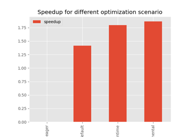

Note
Go to the end to download the full example code.
301: Compares LLAMA exporters¶
The script compares the two exporters implemented in pytorch for a part of llama model. The model are compared after all optimizations were made with and onnxruntime.
TorchScript-based ONNX Exporter, let’s call it script
TorchDynamo-based ONNX Exporter, let’s call it dynamo
To run the script:
python _doc/examples/plot_llama_diff_export --help
Some helpers¶
from experimental_experiment.args import get_parsed_args
script_args = get_parsed_args(
"plot_llama_diff_export",
description=__doc__,
part=("model", "one value among model, ..."),
exporter=("dynamo", "one value among dynamo, custom"),
ortopt=(1, "run onnxruntime optimization"),
opset=(18, "onnx opset"),
expose="part,exporter,ortopt,opset",
)
import contextlib
import os
import io
import warnings
import logging
try:
with warnings.catch_warnings():
warnings.simplefilter("ignore")
import onnxruntime
has_cuda = "CUDAExecutionProvider" in onnxruntime.get_available_providers()
except ImportError:
print("onnxruntime not available.")
import sys
sys.exit(0)
import numpy as np
import onnx
from onnx_array_api.reference import compare_onnx_execution
import torch
from experimental_experiment.ext_test_case import unit_test_going
from experimental_experiment.reference import ExtendedReferenceEvaluator
from experimental_experiment.torch_interpreter import to_onnx
from experimental_experiment.helpers import string_type
from experimental_experiment.xbuilder import OptimizationOptions
from experimental_experiment.convert.convert_helper import ort_optimize
from experimental_experiment.torch_models.llama_helper import get_llama_model
from experimental_experiment.torch_models.dump_helper import reorder_functions_in_proto
has_cuda = has_cuda and torch.cuda.device_count() > 0
logging.disable(logging.ERROR)
provider = "cuda" if has_cuda else "cpu"
The exporting functions¶
print(f"part={script_args.part}")
print(f"exporter={script_args.exporter}")
ortopt = script_args.ortopt in (1, "1")
print(f"ortopt={ortopt}")
opset = int(script_args.opset)
print(f"opset={opset}")
def opt_filename(filename: str) -> str:
name, ext = os.path.splitext(filename)
return f"{name}.opt{ext}"
def export_script(filename, model, *args):
with contextlib.redirect_stdout(io.StringIO()):
with warnings.catch_warnings():
warnings.simplefilter("ignore")
torch.onnx.export(
model, args, filename, input_names=["input"], opset_version=opset
)
if ortopt:
onx = onnx.load(filename)
ort_optimize(onx, opt_filename(filename), providers=provider)
def export_dynamo(filename, model, *args):
with contextlib.redirect_stdout(io.StringIO()):
with warnings.catch_warnings():
warnings.simplefilter("ignore")
export_output = torch.onnx.export(model, args, dynamo=True)
export_output.optimize()
model = export_output.model_proto
with open(filename, "wb") as f:
f.write(model.SerializeToString())
if ortopt:
ort_optimize(model, opt_filename(filename), providers=provider)
def export_custom(filename, model, *args):
new_model = to_onnx(
model,
tuple(args),
input_names=[f"input{i}" for i in range(len(args))],
options=OptimizationOptions(
remove_unused=True,
constant_folding=False,
),
target_opset=opset,
)
with open(filename, "wb") as f:
f.write(new_model.SerializeToString())
if ortopt:
ort_optimize(new_model, opt_filename(filename), providers=provider)
part=model
exporter=dynamo
ortopt=True
opset=18
Model and data¶
if unit_test_going():
kwargs = dict(input_dims=[(2, 1024)] * 2)
else:
kwargs = dict(
input_dims=[(2, 1024)] * 2,
_attn_implementation="eager",
num_hidden_layers=1,
hidden_size=512,
vocab_size=4000,
intermediate_size=2000,
max_position_embeddings=2048,
num_attention_heads=8,
)
if script_args.part == "model":
model, inputs = get_llama_model(**kwargs)
else:
raise RuntimeError(f"Unexpected value for part={script_args.part!r}")
print(f"simple run with {len(inputs)} inputs")
expected = model(*inputs[0])
print(f"eager worked: {string_type(expected, with_shape=True)}")
simple run with 2 inputs
eager worked: (T1s2x1024x512,)
Exporting¶
exporter = script_args.exporter
file1 = f"llama.{script_args.part}.script.onnx"
file2 = f"llama.{script_args.part}.{exporter}.onnx"
print("torch script exporter")
export_script(file1, model, *inputs[0])
if exporter == "dynamo":
print("torch dynamo exporter")
export_dynamo(file2, model, *inputs[0])
elif exporter == "custom":
print("torch custom exporter")
export_custom(file2, model, *inputs[0])
else:
raise AssertionError(f"Unexpected value for exporter={exporter!r}.")
torch script exporter
torch dynamo exporter
Verification¶
if ortopt:
print("Using models optimized by onnxruntime")
file1 = f"llama.{script_args.part}.script.opt.onnx"
file2 = f"llama.{script_args.part}.{exporter}.opt.onnx"
providers = (
["CPUExecutionProvider"]
if provider == "cpu"
else [("CUDAExecutionProvider", {}), ("CPUExecutionProvider", {})]
)
model1 = onnx.load(file1)
model2 = onnx.load(file2)
feeds1, feeds2 = {}, {}
for i in range(len(inputs[0])):
x = inputs[0][i].detach().numpy()
feeds1[model1.graph.input[i].name] = x
feeds2[model2.graph.input[i].name] = x
if ortopt:
sess1 = onnxruntime.InferenceSession(file1, providers=providers)
sess2 = onnxruntime.InferenceSession(file2, providers=providers)
got1 = sess1.run(None, feeds1)
got2 = sess2.run(None, feeds2)
if isinstance(expected, tuple) and len(expected) == 1:
expected = expected[0]
diff1 = np.abs(expected.detach().numpy() - got1[0]).max()
diff2 = np.abs(expected.detach().numpy() - got2[0]).max()
print(f"Error with the eager model and onnxruntime: {diff1}, {diff2}")
Using models optimized by onnxruntime
Error with the eager model and onnxruntime: 0.0034363865852355957, 0.003467559814453125
Verification with the reference evaluator¶
reorder_functions_in_proto(file1)
reorder_functions_in_proto(file2)
sess1 = ExtendedReferenceEvaluator(file1)
try:
sess2 = ExtendedReferenceEvaluator(file2)
except NotImplementedError as e:
print(e)
sess2 = None
got1 = sess1.run(None, feeds1)
got2 = got1 if sess2 is None else sess2.run(None, feeds2)
if isinstance(expected, tuple):
diff1 = np.abs(expected[0].detach().numpy() - got1[0]).max()
diff2 = np.abs(expected[0].detach().numpy() - got2[0]).max()
else:
diff1 = np.abs(expected.detach().numpy() - got1[0]).max()
diff2 = np.abs(expected.detach().numpy() - got2[0]).max()
print(f"Error with the eager model and the reference evaluator: {diff1}, {diff2}")
Error with the eager model and the reference evaluator: 3.4570693969726562e-06, 4.0531158447265625e-06
Comparison and execution¶
def clean_name(name):
return name.replace(
"_inlfunc_transformers_models_llama_modeling_llama_LlamaAttention", ""
).replace("_inlfunc_torch_nn_modules_linear_Linear", "")
if sess2 is not None:
try:
np_inputs = [i.detach().numpy() for i in inputs[0]]
res1, res2, align, dc = compare_onnx_execution(
model1,
model2,
inputs=np_inputs,
verbose=1,
raise_exc=False,
cls=ExtendedReferenceEvaluator,
)
for r in res2:
r.name = clean_name(r.name)
text = dc.to_str(res1, res2, align, column_size=90)
print(text)
except AssertionError as e:
if "Unexpected type <class 'list'> for value, it must be a numpy array." not in str(e):
raise
print(e)
[compare_onnx_execution] execute with 2 inputs
[compare_onnx_execution] execute first model
[compare_onnx_execution] got 83 results
[compare_onnx_execution] execute second model
[compare_onnx_execution] got 83 results (first model)
[compare_onnx_execution] got 97 results (second model)
[compare_onnx_execution] compute edit distance
[compare_onnx_execution] got 111 pairs
[compare_onnx_execution] done
001 = | INITIA float32 2:4000x512 KZOD model.embed_tokens.weight | INITIA float32 2:4000x512 KZOD model.embed_tokens.weight
002 + | | INITIA float32 4:1x1024x1x64 CJYF unsqueeze_10
003 + | | INITIA float32 2:2000x512 CIPD val_322
004 - | INITIA float32 1:512 YYYY model.layers.0.input_layernorm.w |
005 - | INITIA float32 2:512x512 BDCV onnx::MatMul_383 |
006 = | INITIA float32 2:512x512 AZEF onnx::MatMul_399 | INITIA float32 2:512x512 AZEF val_240
007 - | INITIA float32 2:512x512 PFCX onnx::MatMul_400 |
008 - | INITIA float32 2:512x512 KCZA onnx::MatMul_425 |
009 - | INITIA float32 2:512x2000 WYRV onnx::MatMul_426 |
010 - | INITIA float32 2:512x2000 TAAL onnx::MatMul_427 |
011 - | INITIA float32 2:2000x512 CIPD onnx::MatMul_428 |
012 ~ | INITIA float32 4:1x1024x1x64 CJYF /model/layers.0/self_attn/Unsque | INITIA float32 4:1x1024x1x64 GSEC unsqueeze_11
013 - | INITIA int64 5:2x1x1024x1024x4 AQYO /model/Concat_output_0 |
014 - | INITIA float32 4:2x1x1024x1024 ???? /model/Slice_2_output_0 |
015 = | INITIA int64 1:2 GGAA splits | INITIA int64 1:2 GGAA splits_token_10
016 ~ | INITIA int64 1:3 CKZA /model/layers.0/self_attn/Consta | INITIA int64 1:2 GGAA splits
017 + | | INITIA float32 2:512x512 PFCX val_242
018 + | | INITIA float32 1:512 YYYY model.layers.0.input_layernorm.w
019 + | | INITIA float32 1:512 YYYY model.layers.0.post_attention_la
020 - | INITIA float32 4:1x1x1024x64 GSEC Transpose_token_4_out0 |
021 ~ | INITIA int64 1:1 DAAA const_transpose_optimizer_token_ | INITIA float32 1:512 YYYY model.norm.weight
022 + | | INITIA float32 4:1024x1x2x1024 ???? val_177
023 + | | INITIA float32 2:512x2000 TAAL val_321
024 + | | INITIA float32 2:512x512 BDCV val_237
025 = | INITIA float32 4:2x1x1024x1024 ???? /model/Expand_output_0 | INITIA float32 4:2x1x1024x1024 ???? expand_1
026 = | INITIA float32 ?AAA /model/Constant_19_output_0 | INITIA float32 ?AAA val_6
027 + | | INITIA float32 2:512x512 KCZA val_315
028 ~ | INITIA int64 1:1 KAAA /model/layers.0/self_attn/Consta | INITIA int64 1:1 ZAAA val_317
029 + | | INITIA float32 2:512x2000 WYRV val_319
030 + | | INITIA float32 4:1x1x1024x64 GSEC Transpose_token_4_out0
031 ~ | INITIA int64 1:4 CBKK /model/Concat_1_output_0 | INITIA int64 1:4 CKZM val_243
032 ~ | INITIA int64 1:1 BAAA /model/layers.0/self_attn/Consta | INITIA int64 CAAA val_22
033 - | INITIA float32 4:1x1024x1x64 GSEC /model/layers.0/self_attn/Unsque |
034 ~ | INITIA int64 1:1 CAAA /model/Constant_13_output_0 | INITIA int64 2:1024x1 KAQG val_175
035 ~ | INITIA float32 AAAA /model/Constant_14_output_0 | INITIA int64 1:2 BCAA val_327
036 ~ | INITIA int64 1:4 CKZM /model/layers.0/self_attn/Consta | INITIA float32 AAAA scalar_tensor_default
037 ~ | INITIA int64 1:1 AAAA /model/layers.0/self_attn/Consta | INITIA int64 1:3 CKZA val_314
038 ~ | INITIA int64 1:2 GGAA splits_token_12 | INITIA float32 AAAA val_235
039 = | INPUT int64 2:2x1024 MKXO input | INPUT int64 2:2x1024 MKXO input_ids
040 = | INPUT float32 2:2x1024 BACA attention_mask.1 | INPUT float32 2:2x1024 BACA attention_mask
041 = | RESULT float32 3:2x1024x512 XLAW Gather /model/embed_tokens/Gather_outpu | RESULT float32 3:2x1024x512 XLAW Gather embedding
042 ~ | RESULT float32 3:2x1024x512 IDLR SimplifiedLayer /model/layers.0/input_layernorm/ | RESULT float32 3:2x1024x512 AAAB Pow pow_1
043 + | | RESULT float32 3:2x1024x1 AAAA ReduceMean mean
044 + | | RESULT float32 3:2x1024x1 AAAA Add add_1
045 + | | RESULT float32 3:2x1024x1 KKKK Sqrt val_236
046 ~ | RESULT float32 3:2x1024x1 ZJFC SimplifiedLayer saved_inv_std_var | RESULT float32 3:2x1024x1 ZJFC Reciprocal rsqrt
047 + | | RESULT float32 3:2x1024x512 IDLR Mul mul_3
048 + | | RESULT float32 3:2x1024x512 IDLR Mul mul_4
049 = | RESULT float32 3:2x1024x512 XTBJ MatMul /model/layers.0/self_attn/k_proj | RESULT float32 3:2x1024x512 XTBJ MatMul linear_1
050 = | RESULT float32 4:2x1024x8x64 XTBJ Reshape /model/layers.0/self_attn/Reshap | RESULT float32 4:2x1024x8x64 XTBJ Reshape view_2
051 = | RESULT float32 4:2x1024x8x32 GRGV Split /model/layers.0/self_attn/Slice_ | RESULT float32 4:2x1024x8x32 GRGV Split node_Slice_356
052 = | RESULT float32 4:2x1024x8x32 SDUP Split /model/layers.0/self_attn/Slice_ | RESULT float32 4:2x1024x8x32 SDUP Split node_Slice_367
053 = | RESULT float32 4:2x1024x8x32 IXGL Neg /model/layers.0/self_attn/Neg_1 | RESULT float32 4:2x1024x8x32 IXGL Neg node_Neg_368
054 = | RESULT float32 4:2x1024x8x64 OOMG Concat /model/layers.0/self_attn/Concat | RESULT float32 4:2x1024x8x64 OOMG Concat node_Concat_369
055 = | RESULT float32 4:2x1024x8x64 TLWN Mul /model/layers.0/self_attn/Mul_3 | RESULT float32 4:2x1024x8x64 TLWN Mul node_Mul_370
056 = | RESULT float32 4:2x1024x8x64 OEHW Mul /model/layers.0/self_attn/Mul_2 | RESULT float32 4:2x1024x8x64 OEHW Mul node_Mul_345
057 = | RESULT float32 4:2x1024x8x64 GQDK Add /model/layers.0/self_attn/Add_1 | RESULT float32 4:2x1024x8x64 GQDK Add node_Add_371
058 = | RESULT float32 4:2x8x64x1024 REOB Transpose /model/layers.0/self_attn/Transp | RESULT float32 4:2x8x64x1024 REOB Transpose transpose_4
059 = | RESULT float32 3:2x1024x512 HRCW MatMul /model/layers.0/self_attn/q_proj | RESULT float32 3:2x1024x512 HRCW MatMul linear
060 = | RESULT float32 4:2x1024x8x64 HRCW Reshape /model/layers.0/self_attn/Reshap | RESULT float32 4:2x1024x8x64 HRCW Reshape view_1
061 = | RESULT float32 4:2x1024x8x64 HMSV Mul /model/layers.0/self_attn/Mul | RESULT float32 4:2x1024x8x64 HMSV Mul node_Mul_317
062 = | RESULT float32 4:2x8x1024x64 JKWQ Transpose /model/layers.0/self_attn/Mul_ou | RESULT float32 4:2x8x1024x64 JKWQ Transpose mul_5
063 = | RESULT float32 4:2x8x1024x64 NNSG Transpose /model/layers.0/self_attn/Transp | RESULT float32 4:2x8x1024x64 NNSG Transpose transpose_1
064 = | RESULT float32 4:2x8x1024x32 INRL Split /model/layers.0/self_attn/Slice_ | RESULT float32 4:2x8x1024x32 INRL Split slice_26
065 = | RESULT float32 4:2x8x1024x32 EZBV Split /model/layers.0/self_attn/Slice_ | RESULT float32 4:2x8x1024x32 EZBV Split slice_27
066 = | RESULT float32 4:2x8x1024x32 WBZF Neg /model/layers.0/self_attn/Neg_ou | RESULT float32 4:2x8x1024x32 WBZF Neg neg
067 = | RESULT float32 4:2x8x1024x64 ENRQ Concat /model/layers.0/self_attn/Concat | RESULT float32 4:2x8x1024x64 ENRQ Concat cat_1
068 = | RESULT float32 4:2x8x1024x64 GSGE Mul /model/layers.0/self_attn/Mul_1_ | RESULT float32 4:2x8x1024x64 GSGE Mul mul_6
069 = | RESULT float32 4:2x8x1024x64 PBDT Add /model/layers.0/self_attn/Add_ou | RESULT float32 4:2x8x1024x64 PBDT Add add_2
070 = | RESULT float32 4:2x8x1024x1024 CEHD FusedMatMul /model/layers.0/self_attn/Mul_4_ | RESULT float32 4:2x8x1024x1024 CEHD FusedMatMul mul_9
071 - | RESULT float32 3:2x1x1024 BACA Unsqueeze /model/Unsqueeze_2_output_0 |
072 = | RESULT float32 4:2x1x1x1024 BACA Unsqueeze /model/Unsqueeze_3_output_0 | RESULT float32 4:2x1x1x1024 BACA Unsqueeze unsqueeze_6
073 = | RESULT float32 4:2x1x1024x1024 ???? Add /model/Add_output_0 | RESULT float32 4:2x1x1024x1024 ???? Add add
074 = | RESULT bool 4:2x1x1024x1024 KWTE Equal /model/Equal_1_output_0 | RESULT bool 4:2x1x1024x1024 KWTE Equal eq
075 = | RESULT float32 4:2x1x1024x1024 ???? Where /model/Where_1_output_0 | RESULT float32 4:2x1x1024x1024 ???? Where masked_fill
076 + | | RESULT float32 4:1024x1x2x1024 ???? Transpose val_176
077 + | | RESULT float32 4:1024x1x2x1024 ???? ScatterND val_178
078 - | RESULT float32 4:2x1x1024x1024 ???? Reshape /model/Reshape_output_0 |
079 - | RESULT float32 4:2x1x1024x1024 ???? ScatterND /model/ScatterND_output_0 |
080 ~ | RESULT float32 4:2x1x1024x1024 ???? Slice /model/layers.0/self_attn/Slice_ | RESULT float32 4:2x1x1024x1024 ???? Transpose slice_scatter_1
081 = | RESULT float32 4:2x8x1024x1024 ???? Add /model/layers.0/self_attn/Add_2_ | RESULT float32 4:2x8x1024x1024 ???? Add add_4
082 ~ | RESULT float32 4:2x8x1024x1024 OOOO Softmax /model/layers.0/self_attn/Softma | RESULT float32 4:2x8x1024x1024 OONO Softmax val_312
083 = | RESULT float32 3:2x1024x512 SNVC MatMul /model/layers.0/self_attn/v_proj | RESULT float32 3:2x1024x512 SNVC MatMul linear_2
084 = | RESULT float32 4:2x1024x8x64 SNVC Reshape /model/layers.0/self_attn/Reshap | RESULT float32 4:2x1024x8x64 SNVC Reshape view_3
085 = | RESULT float32 4:2x8x1024x64 KVNL Transpose /model/layers.0/self_attn/Transp | RESULT float32 4:2x8x1024x64 KVNL Transpose transpose_3
086 = | RESULT float32 4:2x8x1024x64 EBGY MatMul /model/layers.0/self_attn/MatMul | RESULT float32 4:2x8x1024x64 EBGY MatMul matmul_2
087 = | RESULT float32 4:2x1024x8x64 PPIW Transpose /model/layers.0/self_attn/Transp | RESULT float32 4:2x1024x8x64 PPIW Transpose transpose_5
088 = | RESULT float32 3:2x1024x512 PPIW Reshape /model/layers.0/self_attn/Reshap | RESULT float32 3:2x1024x512 PPIW Reshape view_4
089 = | RESULT float32 3:2x1024x512 GGVP MatMul /model/layers.0/self_attn/o_proj | RESULT float32 3:2x1024x512 GGVP MatMul linear_3
090 = | RESULT float32 3:2x1024x512 DRVK Add /model/layers.0/Add_output_0 | RESULT float32 3:2x1024x512 DRVK Add add_5
091 ~ | RESULT float32 3:2x1024x512 YUIE SimplifiedLayer /model/layers.0/post_attention_l | RESULT float32 3:2x1024x512 HNSA Pow pow_2
092 + | | RESULT float32 3:2x1024x1 WWKK ReduceMean mean_1
093 + | | RESULT float32 3:2x1024x1 WWKK Add add_6
094 + | | RESULT float32 3:2x1024x1 DDVV Sqrt val_318
095 ~ | RESULT float32 3:2x1024x1 XXYD SimplifiedLayer saved_inv_std_var_token_10 | RESULT float32 3:2x1024x1 XXYD Reciprocal rsqrt_1
096 + | | RESULT float32 3:2x1024x512 YUIE Mul mul_10
097 + | | RESULT float32 3:2x1024x512 YUIE Mul mul_11
098 = | RESULT float32 3:2x1024x2000 QEHO MatMul /model/layers.0/mlp/gate_proj/Ma | RESULT float32 3:2x1024x2000 QEHO MatMul linear_4
099 = | RESULT float32 3:2x1024x2000 JIQR QuickGelu /model/layers.0/mlp/act_fn/Mul_o | RESULT float32 3:2x1024x2000 JIQR QuickGelu silu
100 = | RESULT float32 3:2x1024x2000 RJCH MatMul /model/layers.0/mlp/up_proj/MatM | RESULT float32 3:2x1024x2000 RJCH MatMul linear_5
101 = | RESULT float32 3:2x1024x2000 WAWN Mul /model/layers.0/mlp/Mul_output_0 | RESULT float32 3:2x1024x2000 WAWN Mul mul_12
102 = | RESULT float32 3:2x1024x512 SSGC MatMul /model/layers.0/mlp/down_proj/Ma | RESULT float32 3:2x1024x512 SSGC MatMul linear_6
103 = | RESULT float32 3:2x1024x512 UIAL Add /model/layers.0/Add_1_output_0 | RESULT float32 3:2x1024x512 UIAL Add add_7
104 ~ | RESULT float32 3:2x1024x512 XYGK SimplifiedLayer 349 | RESULT float32 3:2x1024x512 CPRC Pow pow_3
105 + | | RESULT float32 3:2x1024x1 AAOO ReduceMean mean_2
106 + | | RESULT float32 3:2x1024x1 AAOO Add add_8
107 + | | RESULT float32 3:2x1024x1 MNJJ Sqrt val_325
108 ~ | RESULT float32 3:2x1024x1 FEGI SimplifiedLayer saved_inv_std_var_token_11 | RESULT float32 3:2x1024x1 FEGI Reciprocal rsqrt_2
109 + | | RESULT float32 3:2x1024x512 XYGK Mul mul_13
110 + | | RESULT float32 3:2x1024x512 XYGK Mul mul_14
111 = | OUTPUT float32 3:2x1024x512 XYGK 349 | OUTPUT float32 3:2x1024x512 XYGK mul_14
See plot_llama_diff_export for a better view.
Total running time of the script: (0 minutes 47.380 seconds)
Related examples

201: Evaluate different ways to export a torch model to ONNX
201: Evaluate different ways to export a torch model to ONNX


102: Fuse kernels in a small Llama Model
102: Fuse kernels in a small Llama Model


201: Use torch to export a scikit-learn model into ONNX
201: Use torch to export a scikit-learn model into ONNX